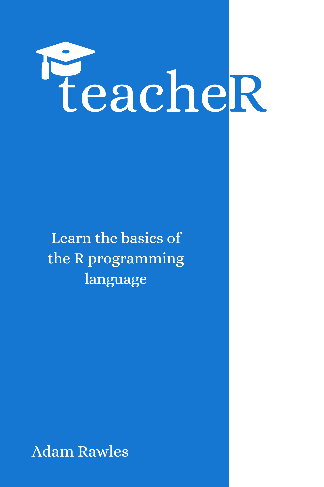

Teach Yourself or Others R
1 teacheR

1.1 Overview
This book is a collection of training materials for an introduction to the R statistical computing programming language. Broken down into chapters, I’ve aimed to cover most of the basics. Alongside each chapter is a xaringan presentation. This can help for those looking to learn, but can also function as a first step for those looking to begin teaching R but who don’t have the time to fully develop their own training modules. Hopefully, all the topics covered in the text version will be covered in the presentation and vice versa, so if you learn visually then you can rest easy knowing that you’re not missing out! You can find a link to each presentation on the first page of each chapter.
This is a work in progress, and so I would greatly appreciate any feedback. Anything from typos to content suggestions, feel free to raise a GitHub issue if you feel something should be changed.
1.2 About Me
I began using R in my second year of university, during an internship looking at publication bias correction methods. I was under the tutorship of a member of staff who helped me immensely, but I must confess that I have never taken an official course in R, online or in person. I like to think, however, that this is not always a bad thing. Learning from the bottom up and struggling along the way is a fantastic way to acquire knowledge and instills a very important lesson:
You’re not going to know everything there is to know about R. Ever. But that’s okay.
I’m now 4 years into my R career and I use R every day. With that in mind, I don’t think there has ever been a day where I haven’t referred to a tutorial, or Stack Overflow, or even just Googled the name of a function that I’ve used 1000 times before. There is a great repository of knowledge for R and it’s one of the things I love most about the R community. So please never feel as though you’re an impostor in a world of R gurus. In reality, everyone else is just as lost as you. But if you keep ticking along and never feel that learning something new in R isn’t worth your time, you’ll end up doing some great things.
And in a roundabout way, that is part of the reason I decided to develop these materials. I don’t pretend to be the ultimate R programmer, because I still know what it’s like to learn something from the start. And everyone has to start somewhere. So I hope that I can help impart some of the lessons that I’ve learnt over the 4 years to anyone who’s looking to learn R in a way that won’t leave you feeling lost.
The only final note I have before we start learning how to use R is another bit of advice:
Don’t believe everything you read
Whilst this is probably a good thing to keep in mind for any type of training, I feel it’s particularly relevant with R for two reasons. Firstly, when it comes to programming languages, lots of people have opinions. Some are true, most are not. Most things you read are a mix between fact and opinion, so take everything with a pinch of salt. For example, the developers of the ggplot2 package are fervently against arbitrary second axes and so support for them in ggplot2 is limited. I also share this view, but that doesn’t mean that I’m right - read, learn, but question and make your own mind up.
Secondly, R and particuarly all of its packages are prone to change. For this reason, people may make statements relative to one version of R that aren’t necessarily true in the future. Things have changed over the years, and so answers from a 10 year-old Stack Overflow question may not still be true when you come across them. A microcosmic version of this are some recent changes in the tidyr package. Historically, converting data from/to long and short formats was done using the spread() and gather() functions. However, in newer releases, these functions are deprecated in favour of pivot_wider() and pivot_longer(), which provide the same functionality but also some extra bits. The practical implication of this suggestion is don’t always read one tutorial on a subject before you dive in.